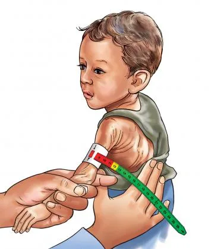
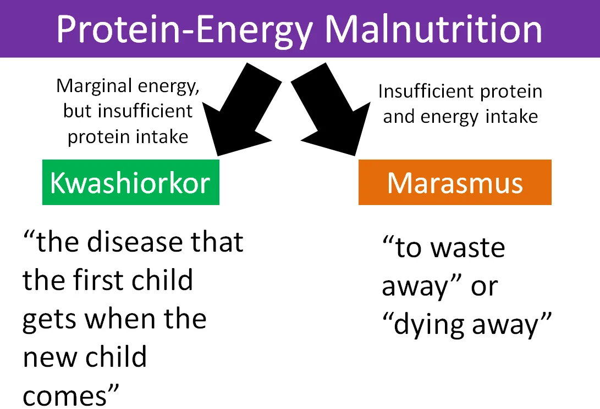
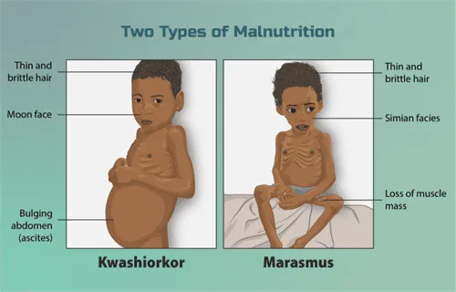
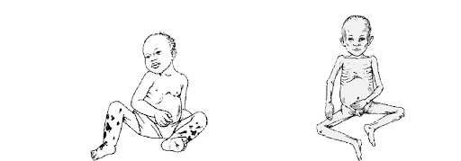
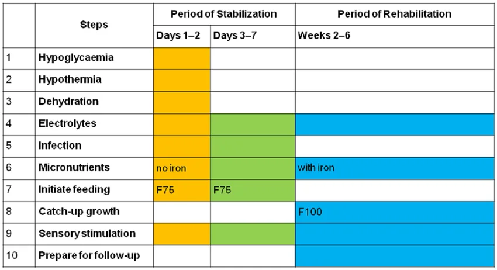

Expanded Nursing Uganda Explanation
Malnutrition should be understood beyond a short definition. Link the concept to patient history, focused assessment, common risks, nursing priorities, documentation and evaluation of outcomes.
01 MALNUTRITION
Malnutrition is a pathological state resulting from a relative or absolute deficiency or excess of one or more essential nutrients. It refers to any condition in which the body does not receive enough nutrients for proper function, encompassing both undernutrition and overnutrition.
- Undernutrition: An insufficient intake of energy and nutrients to meet an individual's needs to maintain good health. This includes conditions like stunting, wasting, and being underweight.
- Overnutrition: An excessive intake of nutrients, especially calories, leading to conditions like overweight and obesity.
- Imbalance: Disproportionate consumption of nutrients, which can lead to adverse health effects even if calorie intake is adequate.
- Specific Deficiency: A lack of one or more specific micronutrients (vitamins or minerals), such as iron deficiency or vitamin A deficiency.
02 Causes and Risk Factors for Malnutrition
- Inadequate Dietary Intake: This is a primary cause, where a child does not consume enough food, or the right kinds of food, to meet their body's needs. This is often linked to a lack of knowledge about adequate feeding practices or poor weaning methods.
- Infections and Disease Conditions: Illness increases the body's metabolic needs while often decreasing appetite. Conditions like chronic diarrhea, malabsorption syndromes, childhood cancers, congenital heart defects, and cystic fibrosis impair the body's ability to absorb and utilize nutrients.
- Poor Socioeconomic Status: Poverty, insufficient education, food insecurity, inadequate sanitation, and large family sizes are major contributing factors to malnutrition.
- Cultural Influences: Deep-rooted beliefs, customs, food taboos, and specific cooking practices can restrict the intake of essential nutrients. For example, some cultures may deny children protein-rich foods like eggs or chicken.
- Social and Political Factors: Social issues like inadequate child spacing, neglect, or separation from parents put a child at risk.
- Political instability and conflict displace populations, disrupting access to food and healthcare.
- Natural disasters like droughts or floods can destroy crops and lead to famine.
- Inadequate Health Services: Lack of access to primary healthcare, nutrition rehabilitation centers, and preventative services like immunization contributes to the cycle of illness and malnutrition.
- Biological Factors: Premature babies have higher nutritional needs and are at greater risk. The nutritional status of the mother during pregnancy also plays a crucial role. Worm infestations are also a common cause, as parasites compete with the host for nutrients.
03 PROTEIN-ENERGY MALNUTRITION (PEM)
Protein-Energy Malnutrition (PEM) , also known as Protein-Calorie Malnutrition (PCM), is a group of clinical conditions resulting from varying degrees of protein and/or energy (calorie) deficiency. It is primarily caused by an inadequate intake of food in both quantity and quality.
- Kwashiorkor: Primarily a deficiency of protein, with adequate or near-adequate energy intake.
- Marasmus: A severe deficiency of both protein and calories (total energy).
- Marasmic-Kwashiorkor: A mixed form with features of both Marasmus and Kwashiorkor. The child is wasted but also has edema.
- Nutritional Dwarfing (Stunting): A chronic condition where a child has a significantly low height for their age due to long-term undernutrition, without other specific signs of Kwashiorkor or Marasmus.
This condition is mainly found in preschool children (typically 1-3 years) after being weaned from breast milk onto a diet high in carbohydrates but low in protein. The name is said to mean "the sickness the older child gets when the new baby comes."
- Essential Features (Always Present): Edema: Pitting edema is the hallmark sign, usually starting in the lower limbs and progressing to the face and upper limbs, giving a "moon face" appearance.
- Growth Retardation: Marked failure to gain weight and height.
- Muscle Wasting: Significant muscle wasting is present, but it can be masked by the edema and retention of some subcutaneous fat.
- Psychomotor Changes: The child is typically apathetic, lethargic, irritable, and lacks interest in their surroundings. Appetite is poor.
- Non-Essential Features (May or May Not Be Present): Hair Changes: Hair becomes thin, dry, brittle, and may change to a reddish-brown or light color. It is easily pluckable. The "flag sign" (alternating bands of light and dark hair) indicates periods of poor nutrition.
- Skin Changes: Characterized by "flaky paint" dermatosis, with patches of hyperpigmentation that peel off to reveal hypo-pigmented or raw skin underneath.
- Hepatomegaly: Enlarged, fatty liver due to impaired synthesis of lipoproteins.
- Associated Problems: Increased susceptibility to infections (GI tract, respiratory), vitamin deficiencies, and diarrhea due to villous atrophy.
This condition results from a severe, prolonged deficiency of all nutrients, especially energy (calories) and protein. It is common in infants and toddlers. It is also known as infantile atrophy.
- Essential Features (Always Present): Severe Wasting: Marked wasting of both muscle and subcutaneous fat. The child appears emaciated ("skin and bones").
- Severe Growth Retardation: The child is significantly underweight (<60% of expected weight for age) and stunted.
- No Edema: Absence of edema is a key distinguishing feature from kwashiorkor.
- Non-Essential Features (May or May Not Be Present): Appearance: The face appears shriveled and old ("wizened face") due to the loss of the buccal pad of fat. Loose skin folds are prominent, especially on the buttocks ("baggy pants").
- Psychomotor Changes: The child is often irritable and fretful, but may also be apathetic. Unlike in kwashiorkor, the child usually has a good appetite (craving for food).
- Hair and Skin: Hair may be thin and sparse, but changes are less pronounced than in kwashiorkor. The skin is dry, thin, and inelastic.
- Associated Problems: Prone to infections, dehydration, anemia, and hypothermia. The liver is usually shrunken.
04 Management of Severe Acute Malnutrition (SAM)
Management depends on the severity of the condition and the presence of complications. It can take place at home, in a nutritional rehabilitation center, or in a hospital.
This is essential for children with severe PEM who have complications like severe edema, infections, dehydration, shock, or persistent loss of appetite. The WHO outlines a 10-step plan for inpatient management.
- Treat/Prevent Hypoglycemia: Give glucose or a sugar solution immediately.
- Treat/Prevent Hypothermia: Keep the child warm with blankets and skin-to-skin contact.
- Treat/Prevent Dehydration: Rehydrate slowly using a special low-osmolarity solution (ReSoMal), not standard ORS.
- Correct Electrolyte Imbalances: Provide potassium and magnesium supplements. Avoid diuretics for edema.
- Treat Infections: Administer broad-spectrum antibiotics, as signs of infection are often masked.
- Correct Micronutrient Deficiencies: Provide multivitamins, but give iron only after the initial stabilization phase (usually after week 2).
- Start Cautious Feeding: Begin with small, frequent feeds of a therapeutic starter formula (F-75).
- Achieve Catch-Up Growth: Gradually transition to a higher-calorie, higher-protein formula (F-100) or ready-to-use therapeutic food (RUTF) to promote rapid weight gain.
- Provide Sensory Stimulation and Emotional Support: Engage the child in play therapy and provide a caring environment to support developmental recovery.
- Prepare for Follow-Up After Discharge: Educate caregivers on continued feeding, hygiene, and the importance of regular follow-up visits.
05 Micronutrient Deficiencies
Vitamins and minerals are essential for bodily functions. Deficiencies can lead to specific disorders.
- Vitamin A: Essential for normal vision, immune function, and cell growth. Sources: Liver, egg yolk, butter, cheese, green leafy vegetables, yellow/orange fruits. Deficiency: Leads to night blindness and xerophthalmia (dry eyes).
- Vitamin D: Promotes calcium and phosphorus absorption for bone mineralization. Sources: Sunlight, fortified milk, fish, egg yolk. Deficiency: Causes rickets in children (bone deformities) and osteomalacia in adults.
- Vitamin E: An antioxidant that protects cells from damage. Sources: Vegetable oils, nuts, seeds. Deficiency: Is rare, but can cause neurological problems.
- Vitamin K: Essential for blood clotting. Sources: Green leafy vegetables, soybeans. Deficiency: Leads to bleeding disorders due to prolonged clotting time.
- Vitamin B Complex: B1 (Thiamine): Causes Beriberi.
- B2 (Riboflavin): Causes angular stomatitis (cracks at corners of the mouth), glossitis.
- B3 (Niacin): Causes Pellagra (characterized by the 3 D's: Dermatitis, Diarrhea, Dementia).
- B12 (Cyanocobalamin): Causes megaloblastic anemia. Not found in plant foods.
- Folic Acid: Causes megaloblastic anemia and glossitis. Crucial for preventing neural tube defects in pregnancy.
- Vitamin C (Ascorbic Acid): Essential for collagen formation, iron absorption, and immune function. Sources: Citrus fruits (oranges, lemons), guava, tomatoes, green vegetables. Deficiency: Causes Scurvy (swollen, bleeding gums; subcutaneous bruising; poor wound healing).
- Calcium: For bone/teeth formation, muscle contraction, nerve conduction, and blood coagulation. Sources: Milk, fish, eggs, green leafy vegetables. Deficiency: Can contribute to rickets and osteoporosis.
- Phosphorus: Key role in bone formation and energy metabolism. Widely available in foods, so deficiency is rare.
- Iron: Essential for hemoglobin formation and oxygen transport. Sources: Meat, liver, eggs, fortified cereals. Deficiency: The most common nutritional deficiency worldwide, causing iron-deficiency anemia.
- Iodine: Essential for thyroid hormone synthesis. Sources: Iodized salt, seafood. Deficiency: Causes goiter and cretinism (impaired neurological function).
06 Diagnosis and Assessment of Malnutrition
This is the science of body measurements to assess nutritional status.
- Weight-for-Age: A general indicator of nutritional status but does not distinguish between acute and chronic malnutrition.
- Height-for-Age (Stunting): Indicates chronic or long-term malnutrition. A child who is stunted is too short for their age.
- Weight-for-Height (Wasting): Indicates acute or recent malnutrition. A child who is wasted is too thin for their height.
- Mid-Upper Arm Circumference (MUAC): A simple, effective measure to identify severe acute malnutrition, especially in community settings. A MUAC of <11.5 cm in children aged 6-59 months indicates SAM.
- Growth Charts: Used to plot a child's measurements over time to monitor growth trends and identify deviations from the norm.
These are used to identify complications and associated conditions:
- Blood Glucose: To check for hypoglycemia.
- Serum Electrolytes: To assess for imbalances, especially potassium.
- Complete Blood Count (CBC) & Hemoglobin: To check for anemia.
- Blood Smear: To test for malaria parasites.
- Blood/Urine Cultures: To identify underlying infections.
07 Nursing Uganda Clinical Lens
Use Malnutrition in children as a practical nursing topic, not only a memorized definition. Adapt assessment and care to age, weight, development, caregiver knowledge and family support.
- What to understand first: define malnutrition in children, identify the normal or expected pattern, then explain what changes when the patient is unwell.
- Why it matters in care: the nurse must recognize risk early, explain findings clearly, document accurately and know when to escalate.
- How to revise it: connect each point to assessment, nursing diagnosis or care problem, intervention, rationale and evaluation.
08 Assessment Guide
- Airway, breathing, circulation, hydration, temperature, feeding, activity and danger signs.
- Weight-based medicines, immunization status, growth, development and caregiver concerns.
- Signs that may be subtle in children, including lethargy, poor feeding, fast breathing or convulsions.
09 Nursing Priorities, Rationales and Outcomes
- Use age-appropriate communication and involve the caregiver.
- Prevent dehydration, hypothermia, medication errors and delayed referral.
- Teach home care, danger signs and follow-up clearly.
The rationale for these priorities is patient safety: nursing actions should prevent deterioration, reduce discomfort, support recovery and create clear evidence for the next caregiver.
- Expected outcome: The child is clinically improving, caregiver instructions are understood and follow-up is arranged.
10 Patient Teaching and Revision Check
- Explain malnutrition in children in simple language the patient or caregiver can repeat back.
- Teach warning signs, medicine or follow-up instructions, hygiene or lifestyle points where relevant.
- For exams, prepare a short answer using: definition, causes or risk factors, signs, assessment, management, complications and prevention.
- For ward practice, document baseline findings, actions taken, patient response and the plan for review.
Illustrations and Diagrams (6)






Related Video Lectures
Watch nursing lecture videos on YouTube for this topic. Opens in a new tab.
Watch on YouTubeExternal link: YouTube may use its own cookies and terms. Nursing Uganda is not affiliated with YouTube.